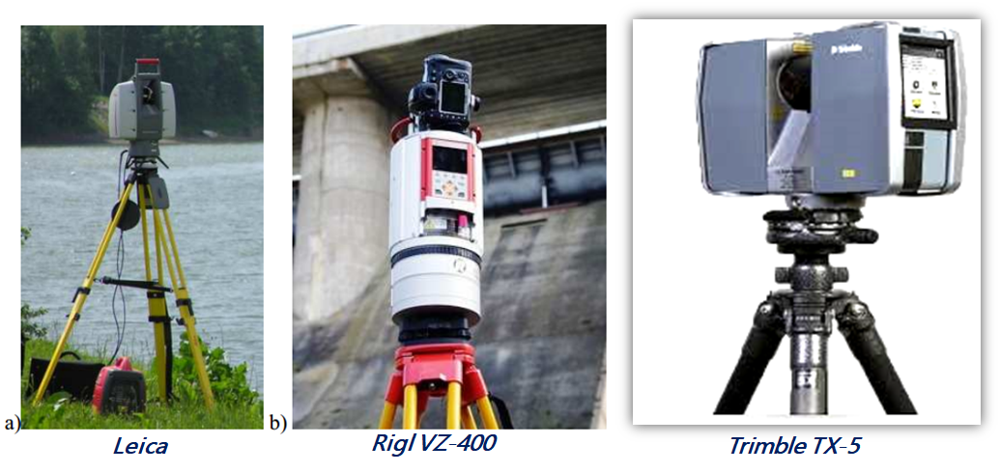
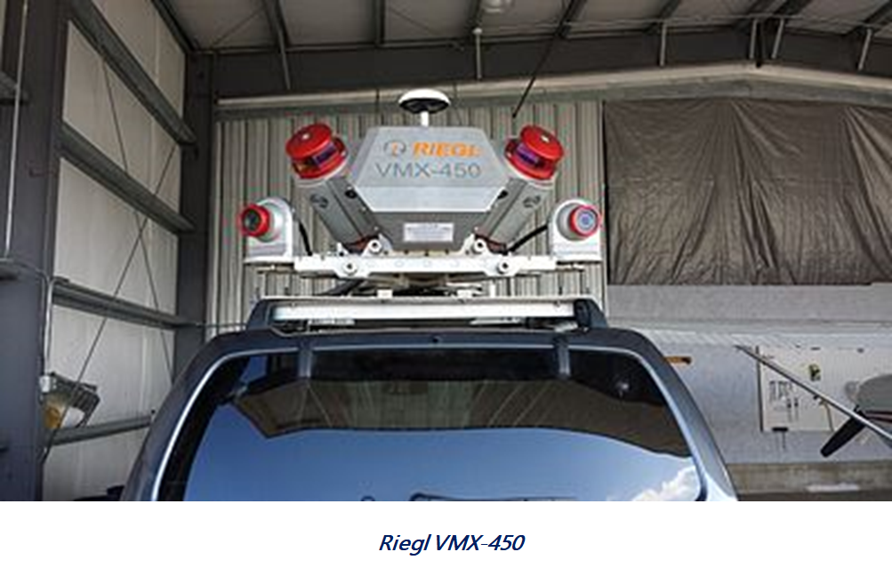
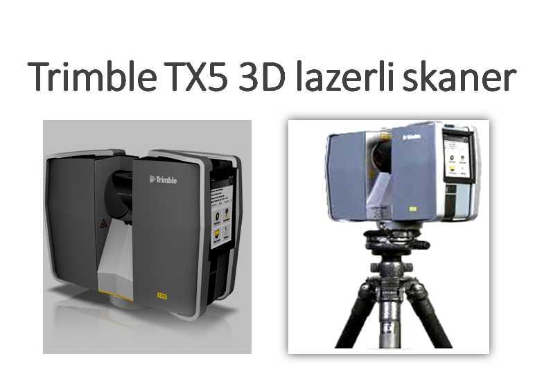
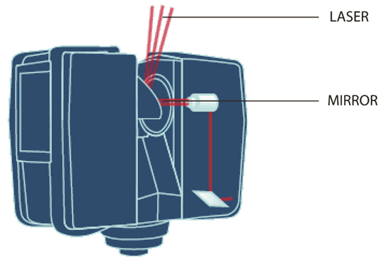
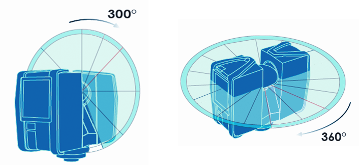
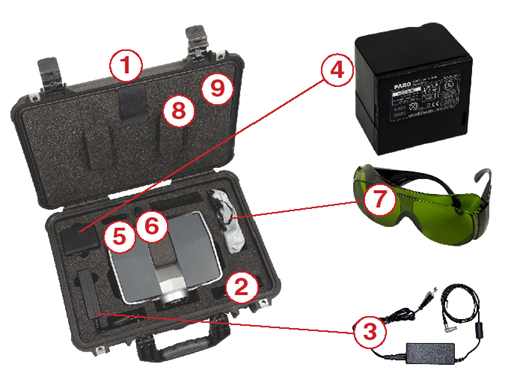
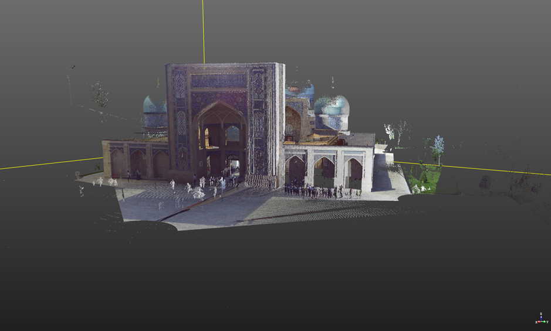
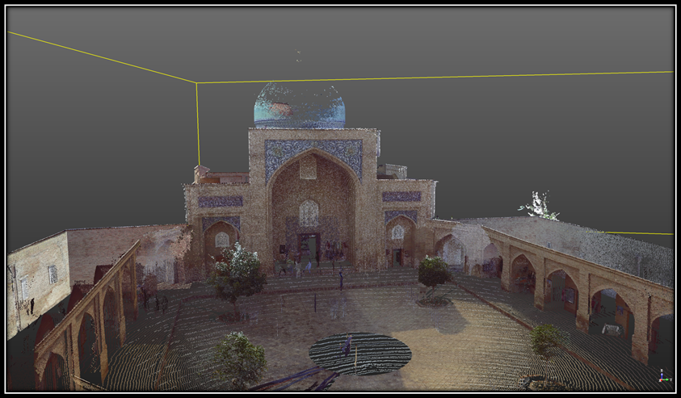
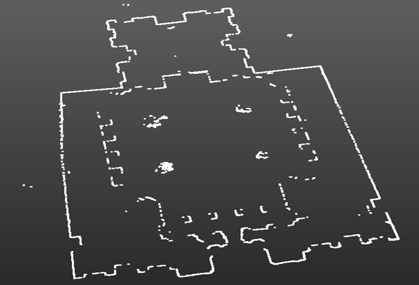
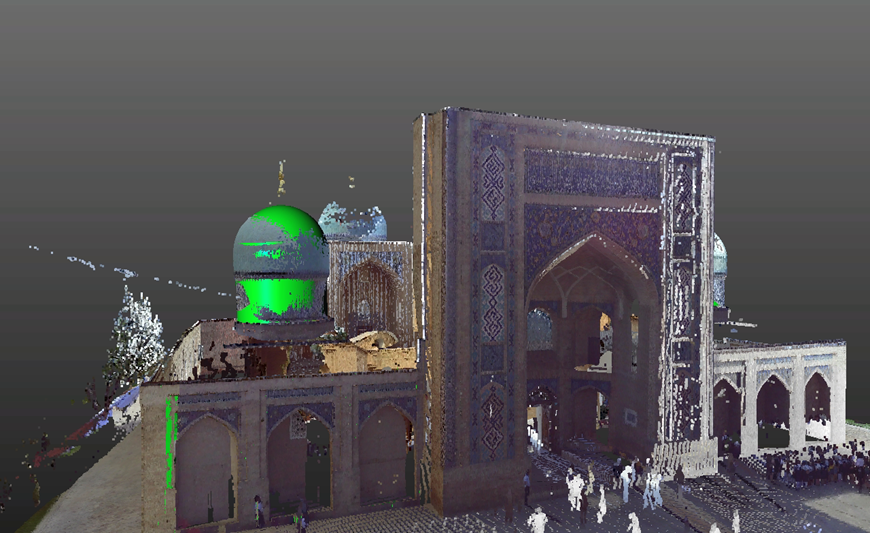

Мавзу: Замонавий лазерли сканерлар
Reja.
1. Замонавий лазерли сканерларнинг турлари
2. Trimble TX5 3D лазерли сканер
3. Баракхон мадрасаси
Maksimal o'lchov masofa, ----------m 120 m
RMS masofa o'lchami ----------2 mm 25 m
Ko'rish maydoni ---------- 300 ° x360 °
Laser, ---------- qizil, 905 nm
3R lazerli sinfi ----------3 mm dumaloq kesimning chiqishida radius diametri
Kompensatorli ---------- ikki tomonlama
Aniqlik darajasi ---------- 0.015 ° darajali
Operatsion harorat oralig'i, ---------- + 5 ° C dan + 40 ° C gacha
Og'irligi ---------- 5 kg
Gabarit o'lchovlari ----------240x200x100 mm
Quvvat sarfi ----------40 vatt
Kirish voltaji ----------19 V
Kafolat ----------1 yil

Trimble TX5 yuqori tezlikda uch o'lchamli laser skaner tezligi sekundiga 976,000 nuqtaga
qadar va 120 metrga qadar tezlikda skaner qilish imkoniyatiga ega. Turkish tizimida 70 Mp
parallaks bo'lmagan avtomatik rangli qopqoqli integratsiya rangli kamera mavjud. Bu sizga
millionlab o'lchovlardan batafsil fotorealistik uch o'lchovli rangli tasvirlarni olish
imkonini beradi. Raqamli tasvirni modellashtirish (RTM), me'moriy yechimlarni aniqlash,
strukturaviy deformatsiyalarni aniqlash va o'lchash, sanoat korxonalari va tarixiy-me'moriy
yodgorliklarni yaratish, tergov va tergov ishlarida foydalanish uchun mukammal yechimlarni
taklif etadi.
Trimble TX5 bozorda mavjud bo'lgan eng kichik va yengil skanerdir. Uning o'lchamlari
240x200x100 mm va uning og`irligi 5,0 kg bo'lganligi uchun uni osongina joydan joyga
ko'chirishi va qiyin erisha oladigan joylarga o'rnatilishi mumkin. Skanerni tashish uchun
kichik va engil vazalar, foydalanuvchilarga qulay, ishonchli va iqtisodiy echimini topishga
imkon beradi. Brauzer shuningdek, Li-Ion batareyasi bilan birga keladi va undan 5 soatgacha
ishlashi mumkin. Ish vaqtida to'g'ridan-to'g'ri zaryadlash mumkin. Foydalanuvchilar ham
brauzerni WLAN orqali masofadan boshqarish, o'chirish va ma'lumotlarni ko'rish hamda yuklab
olish uchun nazorat qilishlari mumkin.


Trimble® TX5 3D lazerli skaner batafsil ma'lumot uchun yuqori tezlikda uch o'lchamli lazerli
skanerdir o'lchov va hujjat. Lazer brauzer juda lazer texnologiyasini ishlab chiqaradi
murakkab muhitlar va geometriyalarning batafsil o'lchamlari faqat bir necha daqiqada.
Olingan natijalar millionlab 3D o'lchash nuqtalarining yig'ilishi.
Asosiy xususiyatlar:
Yuqori aniqlik.
Oliy ruxsatda.
Yuqori tezlik.
Ichki sensorli displey orqali intuitiv nazorat.
Kichik o'lchamlari, engilligi va integratsiyalangan tezkor zaryadlangan batareyasi
tufayli yuqori mobillik.
Birlashgan rangli kamera tufayli fotorealistik 3D rangli skanerlash.
Avtomatlashtirilgan skanerlash ma'lumotlarini avtomatik tarzda to'ldirish uchun
o'rnatilgan ikki tomonlama eksa kompensatori.
Telefonga o'rnatilgan kompas va altimeter orqali yo'nalish va balandlik ma'lumotlarini
tekshiradi.
WLAN-dan skanerni masofadan nazorat qilish.
Printsipial jihatdan, TX5 3D lazer skaneri uning markaziga infraqizil lazer nurini
yuborish orqali ishlaydi aylanuvchi oyna. Oyna atrof-muhit atrofida vertikal aylanish
chizig'ida lazer nurini qo'zg'atadi skanerlash; atrofdagi narsalardan tarqalgan yorug'lik
keyinchalik skanerga qaytariladi.

Masofani o'lchash uchun lazer skanerida o'zgarishlar smenali texnologiyasi qo'llaniladi, bu
erda doimiy to'lqinlar turli uzunlikdagi infraqizil nur brauzerdan tashqariga chiqadi. Bilan
aloqa o'rnatilganda ob'ekt, ular brauzerda qayta aks ettiriladi. Brauzerdan obyektga bo'lgan
masofa infraqizil nurning to'lqinlaridagi o'zgarishlar o'zgarishi bilan aniqlanadi.
HYPERMODULATION modulyatsiyalangan signalning signal-to-noise nisbatlarini sezilarli
darajada oshiradi maxsus modulyatsiya texnologiyasining yordami. Har bir nuqtaning x, y, z
koordinatalari keyinchalik aniqlanadi aylana aylanishini o'lchash va lazerning gorizontal
aylanishini o'lchash uchun burchakni kodlovchi yordamida skaner. Ushbu burchaklar masofani
o'lchash bilan bir vaqtning o'zida kodlanadi. Masofa, vertikal burchak va gorizontal
burchakni tashkil etuvchi polar koordinatani (d, a, b) hosil qiladi, keyin u aylanadi
Cartesian koordinatasiga (x, y, z). Brauzer, 360 ° x 300 ° nuqtai nazarga ega.

TX5 3D lazerli skaner quyidagi jihozlar bilan ta'minlangan:

1. Scanner transport va tashish sumkasi
2. AC quvvat simini
3. Cable Simli tashqi quvvat manbai
4. PowerBlock batareyasi
5. Xotira kartasi qutisi
6. USB xotira kartasini o'qish dastruridan
7. Lazer xavfsizlik ko'zoynagi
The Qopqoqning qopqog'ida joylashgan Tez Bosh ko'rsatma
TX5 SCENE dasturiy ta'minoti bo'lgan disk va bu qopqoq panelida joylashgan ushbu
foydalanuvchi qo'llanmasi
Bundan tashqari, brauzer ichida SD xotira kartasi mavjud.
Barakxon madrasasi


Баракхон мадрасасининг 2 ўлчамли модели

Баракхон мадрасасининг 3 ўлчамли модели
